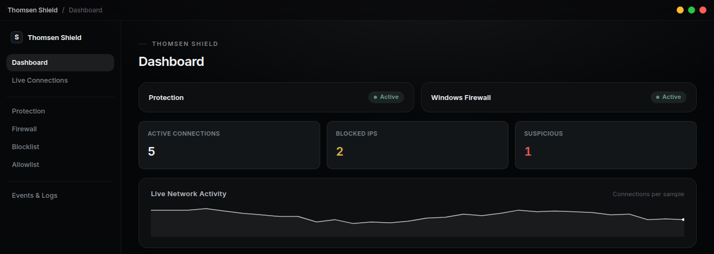

Windows Utility · Paid
Lightweight network protection for Windows. Monitor suspicious traffic, control your firewall and automatically block abusive connections.
Windows 10 / 11 • One-time payment • Lifetime license